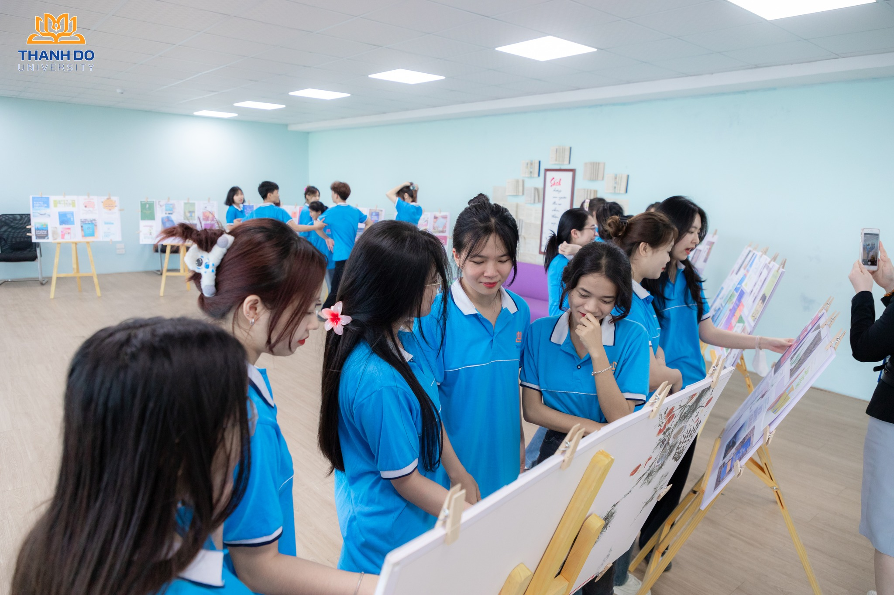

Ngôn ngữ Anh
Tổng quan
Ngành Ngôn ngữ Anh là ngành nghiên cứu, sử dụng tiếng Anh – loại ngôn ngữ phổ biến nhất thế giới. Chương trình đào tạo ngành này giúp sinh viên làm chủ và sử dụng tiếng Anh thành thạo. Đây còn là ngành học nghiên cứu về lịch sử, con người, văn hóa của các quốc gia, dân tộc sử dụng tiếng Anh trên thế giới.
- Mã ngành: 7220201
- Định hướng đào tạo: Tiếng Anh Du lịch, Tiếng Anh Sư phạm, Tiếng Anh - Trung
- Thời gian đào tạo: Tùy thuộc vào đối tượng đầu vào (Trung cấp, Cao đẳng, Đại học)
- Trình độ đào tạo: Cử nhân
- Học phí: 370.000 đồng/1 tín chỉ
Chương trình đào tạo
Mỗi môn học, mỗi nhóm kiến thức đều được sắp xếp hợp lý và theo trình tự khoa học, có gắn kết với nhau. Điều này sẽ giúp bạn sau khi học thấy được sự liên kết giữa các học phần với nhau, giữa các kiến thức với nhau, từ đó am hiểu được kiến thức, kỹ năng đòi hỏi của ngành.
- Mô tả chương trình đào tạo: Xem chi tiết tại đây

Triển vọng nghề nghiệp
Sinh viên Ngôn ngữ Anh luôn có nhiều cơ hội việc làm với mức lương hấp dẫn tại các công ty có vốn đầu tư nước ngoài, doanh nghiệp nước ngoài tại Việt Nam, hoặc thậm chí là một “công việc toàn cầu”. Đặc biệt, với việc Việt Nam ký Hiệp định đối tác thương mại xuyên Thái Bình Dương TPP, tham gia hiệp định tự do mậu dịch với Châu Âu và Hàn Quốc, Cộng đồng kinh tế ASEAN đã chính thức vận hành thì cơ hội nghề nghiệp đối với các cử nhân tốt nghiệp ngành Ngôn ngữ Anh luôn luôn rộng mở. Ngoài ra, theo các chuyên gia, Ngôn ngữ Anh là ngành học được ưa chuộng vì thị trường lao động Việt Nam bao giờ cũng cần rất nhiều những người giỏi ngoại ngữ, vững kiến thức văn hóa – xã hội và thạo kỹ năng làm việc.
- Phiên dịch viên, biên tập viên, thư ký trong các cơ quan dùng tiếng nước ngoài
- Hướng dẫn viên, chuyên viên tư vấn tại các công ty du lịch, lữ hành, nhà hàng khách sạn
- Giáo viên trường cao đẳng, trung cấp chuyên nghiệp, phổ thông trung học, trung tâm ngoại ngữ